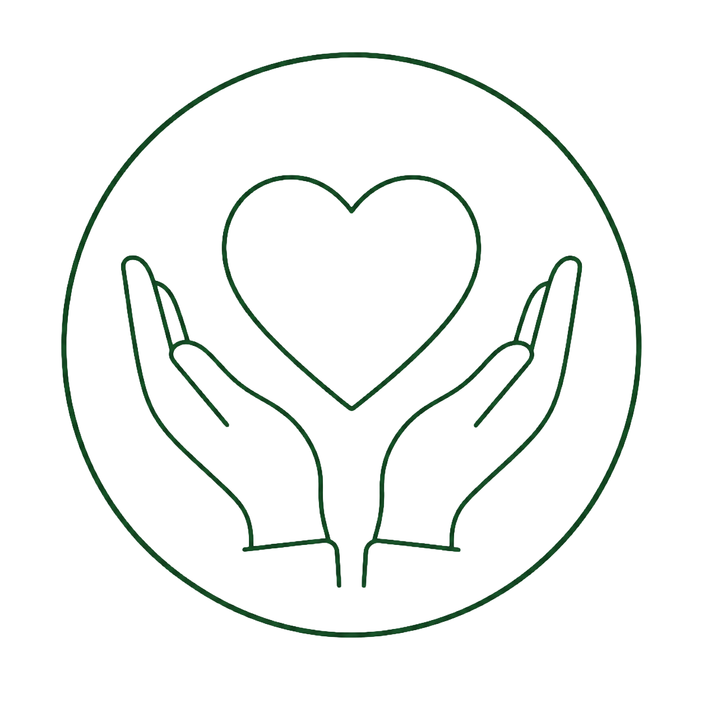
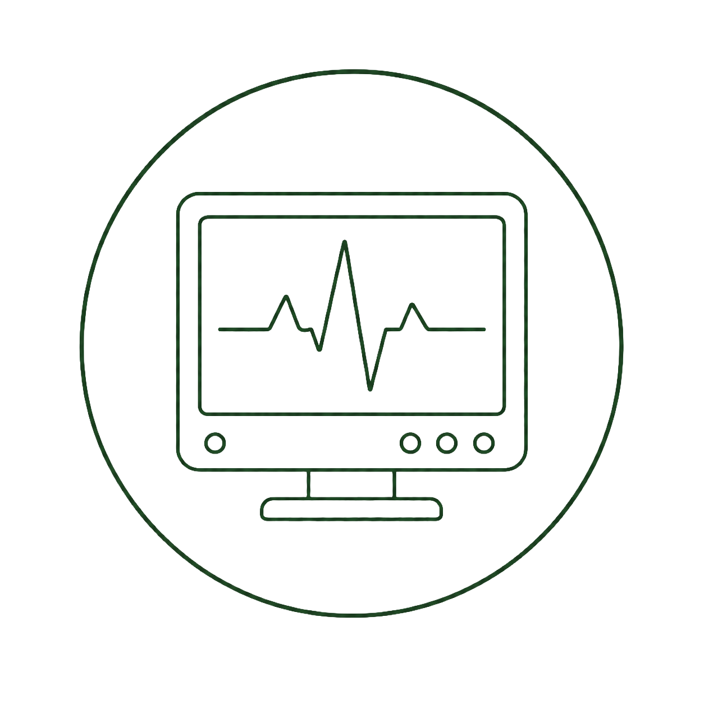
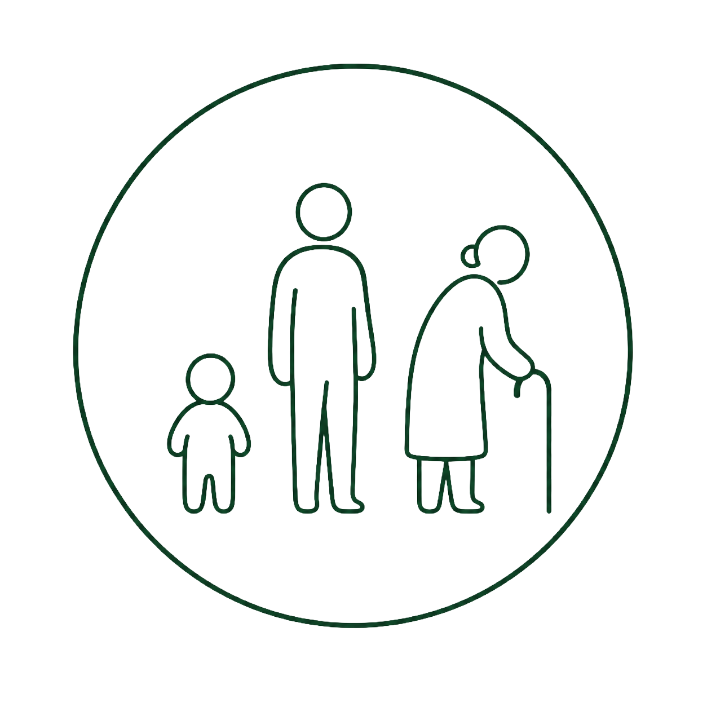
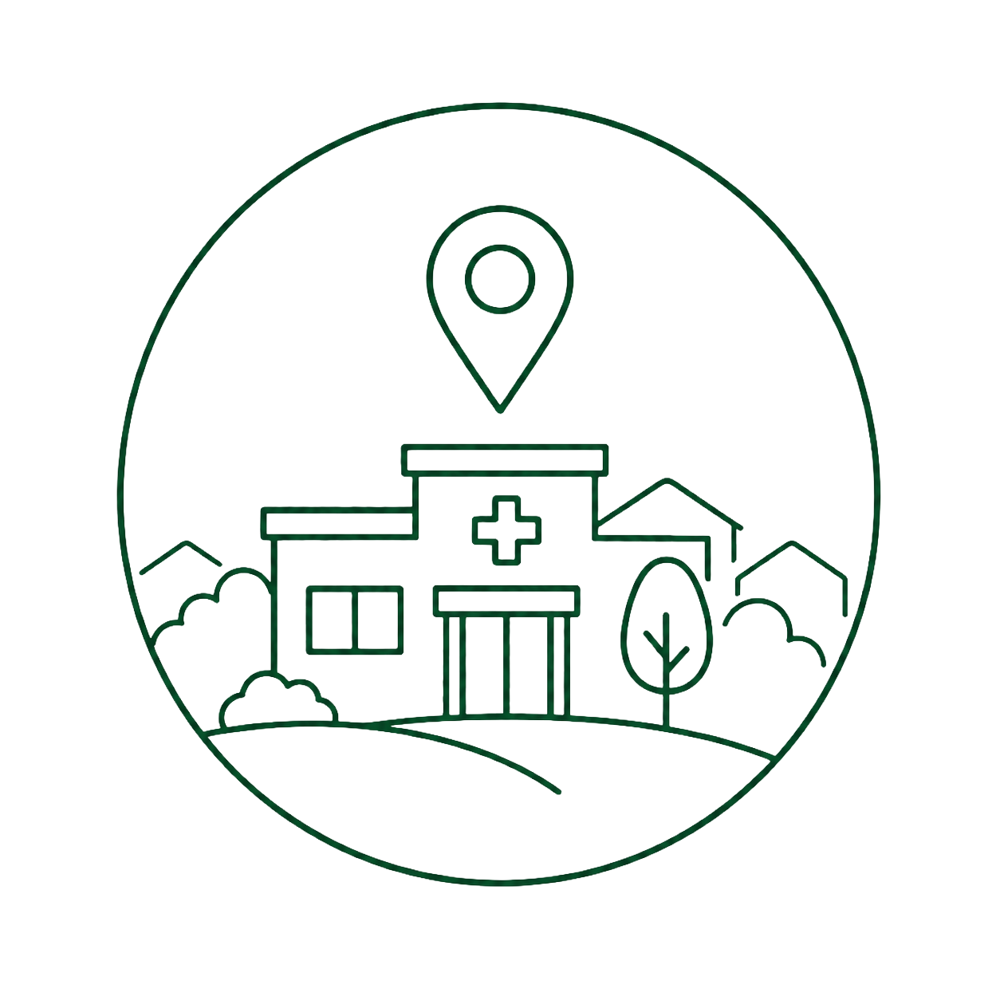
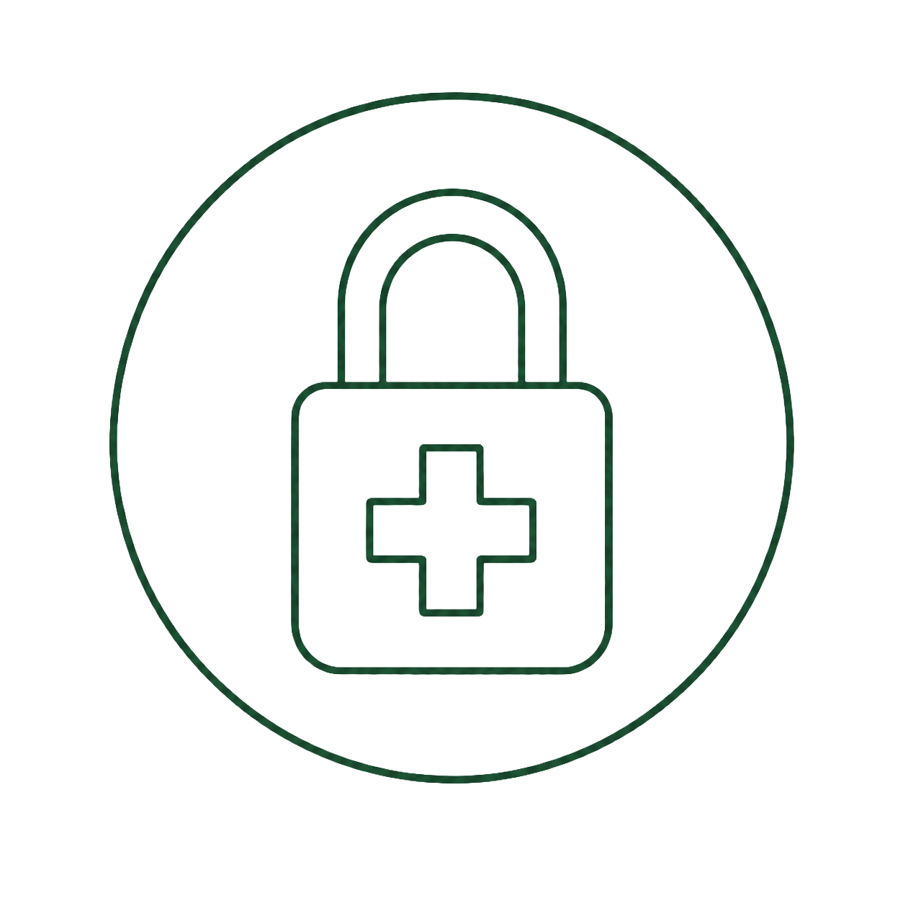
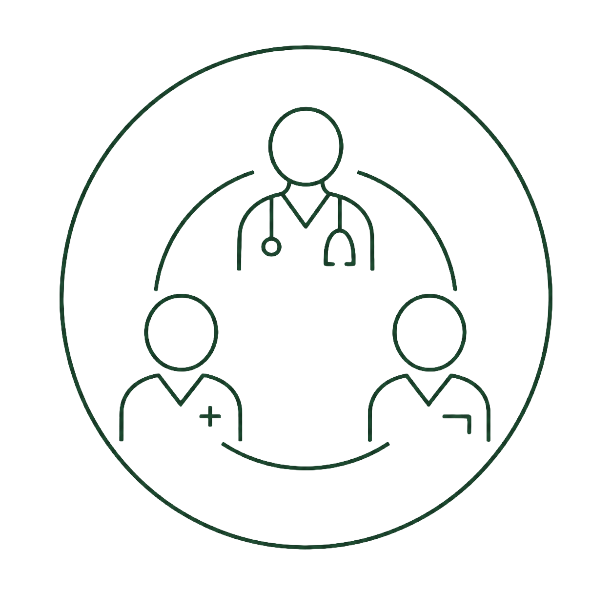

Policy
診療方針

当院の診療方針は、「患者様の声に耳を傾け、共に歩む医療」です。内科を中心にさまざまな疾患へ対応し、症状を的確に診断して最適な治療を提供します。患者様との信頼関係を大切に、わかりやすく丁寧な説明を行い、納得いただける治療方針を一緒に考えます。
病気の治療だけでなく、生活習慣の改善や予防についてもアドバイスし、患者様の健康管理を全力でサポートします。治療方法やお薬について不安があれば、遠慮なくお尋ねください。
About
当院の診療方針は、「患者様の声に耳を傾け、共に歩む医療」です。内科を中心にさまざまな疾患へ対応し、症状を的確に診断して最適な治療を提供します。患者様との信頼関係を大切に、わかりやすく丁寧な説明を行い、納得いただける治療方針を一緒に考えます。
病気の治療だけでなく、生活習慣の改善や予防についてもアドバイスし、患者様の健康管理を全力でサポートします。治療方法やお薬について不安があれば、遠慮なくお尋ねください。
佐藤医院は、地域の皆様の健康を守るために、長年にわたり地域医療を支えてきました。定期的な健康診断や健康相談も実施し、地域住民の皆様が健康な生活を送れるようサポートしています。
病気の治療だけでなく予防の重要性も強く認識し、定期的な健診を通じた早期発見・早期治療に努めています。
当院では、子どもから高齢者まですべての年代の患者様に対応し、各世代に必要な医療サービスを提供しています。予防医療や健康相談を通じて、ご家族全員のより良い生活習慣の定着を目指します。
診断精度を高めるため、最新の医療設備を導入し診療に活かしています。必要に応じて適切な検査を行い、迅速に対応します。
また、医師・看護師・事務スタッフが一丸となるチーム医療を実践し、スタッフ全員が最新の治療法・技術の研鑽を積みながら、患者様に最適なケアを提供します。

1. 信頼関係を築く医療患者様一人ひとりと向き合い、
納得いただける説明を尽くす
健診・予防接種・健康相談で
病気を未然に防ぐ

3. 最先端の技術・設備高度な医療機器と最新知識で
精度の高い診断・治療を行う

4. ライフステージに小児から高齢者まで、
各年代に必要なケアを提供

5. 地域密着型の医療気軽に相談できる存在として、
健康セミナー等で地域に貢献

6. プライバシーと個人情報保護と
感染症対策・衛生管理を徹底

7. チーム医療の推進多職種が連携し、
患者様に最適なケアを提供
佐藤医院では、患者様の健康を第一に考え、今後も安心・安全な医療を提供し続けます。どんな小さな悩みでも、お気軽にご相談ください。地域の皆様とともに、より健康で豊かな生活を築いていきたいと考えています。スタッフ一同、皆様のご来院を心よりお待ちしております。
地域の皆様に安心してご来院いただけるよう、スタッフ一同、誠心誠意対応いたします。
それぞれの専門性と温かさを活かし、皆様の健康を支えるパートナーとしてお力になれるよう努めてまいります。